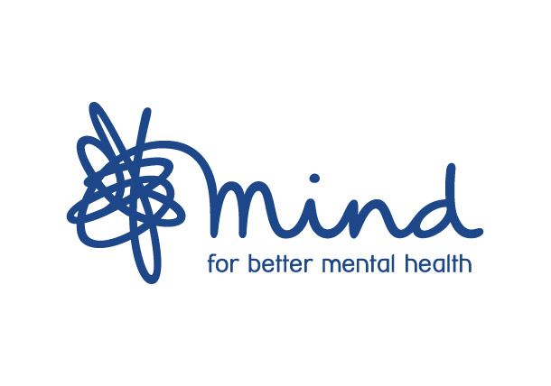
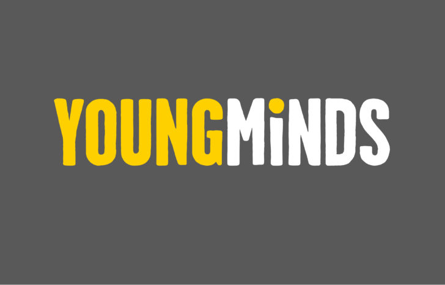

Your doctor is a good starting point for mental health support. They can listen, refer you to specialist services, and discuss treatment options.
If you are a student, your school or university can provide free support:
The NHS provides free mental health services:
Mind - Information about mental health and local services

YoungMinds - Support for young people's mental health

NHS - Information and services